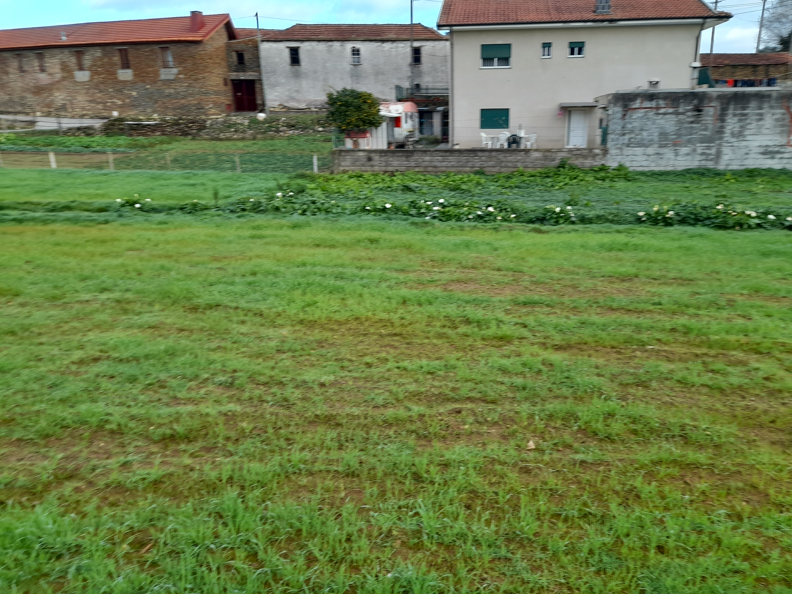
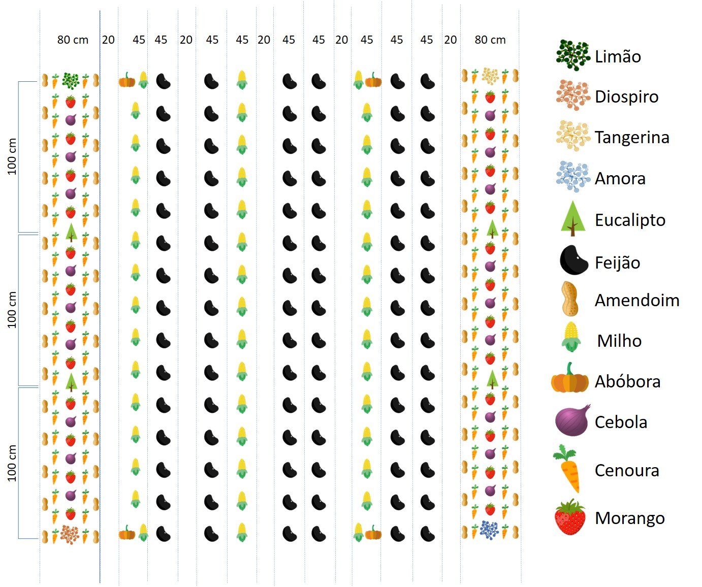
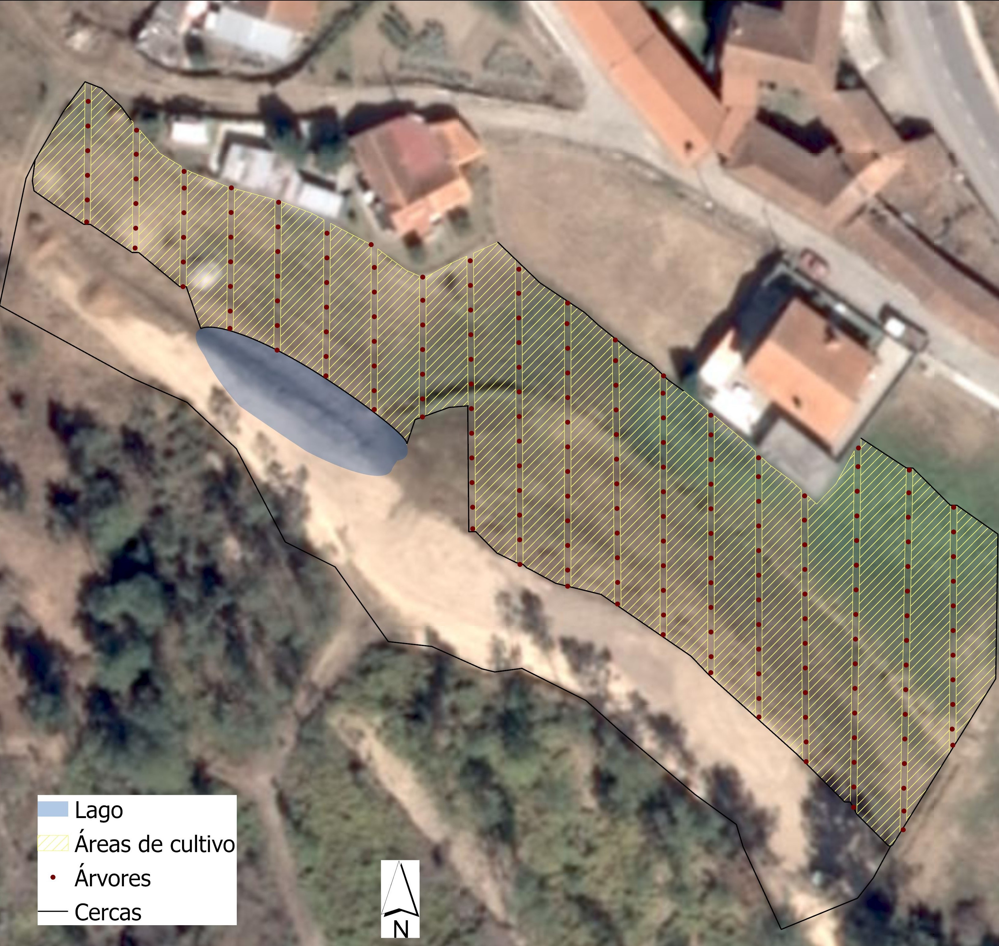

Materiais e Documentos

Local implantação da agrofloresta. Vista para o Leste.

Local de implantação da agrofloresta. Ao fundo e esquerda, vista para a Casa da Fisga.

Vista para o espaço destinado para pastagem de ovelhas 
Local de implantação da agrofloresta. Ao fundo e esquerda, vista para a Casa da Fisga.

Local implantação da agrofloresta. Vista para o Oeste. 
Arruamento esquemático da AgroFloresta. 
Proposta de modelo agroflorestal para as Lavouras da Fisga.